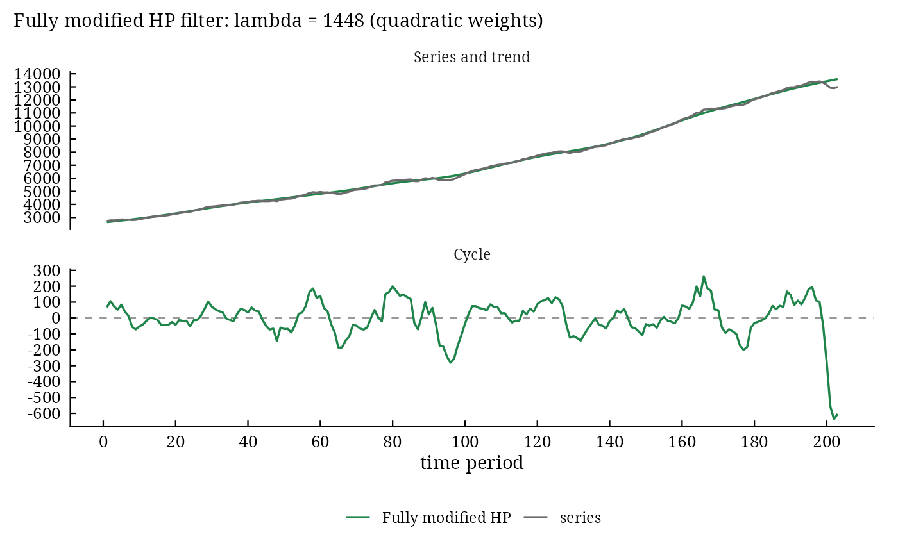
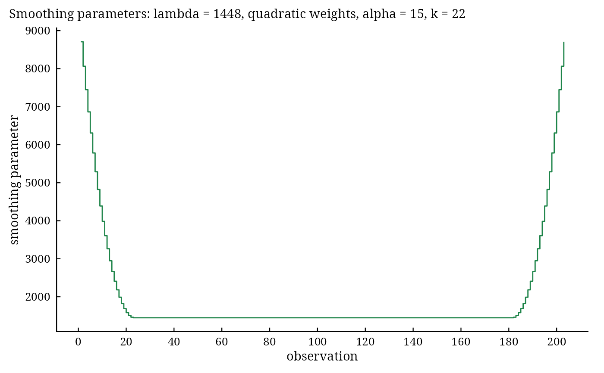

autoplot() (and plot()) of a filter result draws the series with its trend and, below, the cycle,
with the time of a ts on the horizontal axis. For the modified HP filter which = "gcv" draws the
criterion against \(\lambda\); for the fully modified HP filter which = "lambda" draws the
smoothing parameters \(\lambda_t\) and which = "loss" the end-point loss.
Usage
autoplot.mhp(object, which = c("decomposition", "gcv", "lambda", "loss"), ...)Arguments
- object
a result of
hp_filter(),mhp_filter()orfmhp_filter()withas_dt = FALSE.- which
"decomposition"(default),"gcv"(modified HP),"lambda"or"loss"(fully modified HP).- ...
not used.
Author
Muhammad Yaseen (myaseen208@gmail.com)
Examples
data(us_macro)
f <-
fmhp_filter(
x = us_macro$gdp
, max_lambda = 3000
, k_linear = 15
, k_quadratic = NULL
, alpha_linear = seq(from = 0, to = 2000, by = 10)
, alpha_quadratic = seq(from = 0, to = 2000, by = 5)
, schemes = c("linear", "quadratic")
, form = "rows"
, lambda = NULL
, log_scale = TRUE
, as_dt = FALSE
)
ggplot2::autoplot(object = f)

plot(x = f, which = "lambda")
